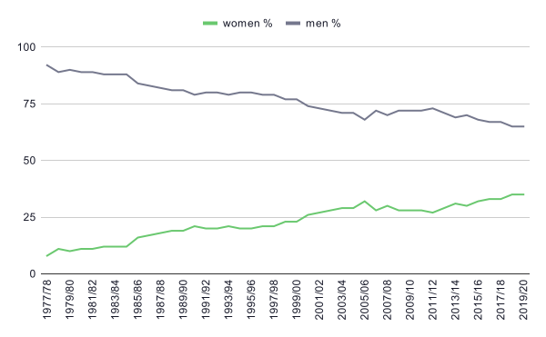
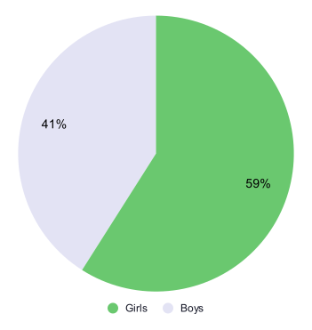

Data Visualization - Young Women in College and University
The goal for Womengineer is that at least 50% of the Engineering graduates in 2030 should be women. Slowly we are making our way towards that goal. It won’t happen by itself and the progress certainly needs to speed up a bit for the goal to be reached.
Graduates with a degree in Master of Science in Engineering
The total number of Engineering graduates has slowly increased. It started off at 1,500 in 1978 and was 4,400 in 2020. However from the beginning of 2000 it looks like the total number is plateauing around 4,000 and it’s fluctuating plus minus a few hundred graduates each year. The reason to the fluctuation in the number of graduates can have its origin in how many open spots the Engineering programs offer each year. For example, in a recession, when the economy is bad and fewer jobs are available the Colleges and Universities tend to get thumbs up from the politics to expand their programs so that more people can attend. This is why we are looking at the share per gender.
Graduates with a degree in Master of Science in Engineering, per gender (1978-2020)
Source: Swedish Higher Education Authority via Statistics Sweden
Admitted to High School
Unfortunately all students that apply will not get accepted. Around 75 percent of the applicants get accepted. The number for girls is slightly higher than the number for boys. Taking this into consideration we can now look at students admitted to the Natural Science program and the Technology program the school year of 2020/2021. Below you can see how the admissions were divided between girls and boys.
Natural Science program, per gender
(school year 2020/21)

Technology program, per gender
(school year 2020/21)

Comment
A majority of the students attending the Natural Science program are girls and a vast majority of the students attending the Technology program are boys. The Natural Science program is far more common than the Technology program in Sweden. You would for a second think that this would lead to a balanced gender mix at STEM programs at College. But unfortunately so is not the case at the moment. Please have a look at the data visualization for College and University to learn more.
Comment
Not taken into consideration is whether or not women or men tend to attend and graduate to a greater extent based on the prevailing economic circumstances. Neither has the fact that many engineers never actually graduate, but start working when they are almost done and never feels the need to finish.